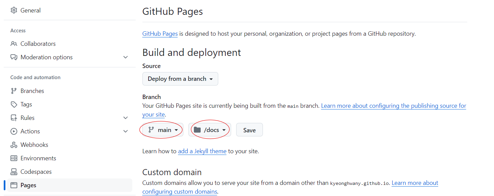

GitHub Pages기능을 이용해 Quarto 배포
quarto
github
Quarto에서 만든 웹사이트, 블로그를 GitHub Pages 기능을 활용해 배포하는 방법입니다.
Quarto 웹사이트를 배포하는 방법
https://quarto.org/docs/publishing/에서 여러 방식으로 quarto를 배포하는 방법을 소개하고 있습니다. 이번 글에서는 github pages 기능을 이용하여 배포하는 방법을 정리해봤습니다.
렌더링 되는 디렉토리 이름 변경
github pages는 docs라는 디렉토리에서 렌더링 되기때문에 _quarto.yml에 다음 코드를 추가하여 Quarto가 렌더링되는 디렉토리를 _site에서 dose로 변경해줘야 합니다.
_quarto.yml
project:
type: website
output-dir: docs.nojekyll 추가
github pages는 기본적으로 jekyll로 만든 웹사이트라 가정하기 때문에 배포하려는 웹사이트가 jekyll로 만든 웹사이트가 아니라는 것을 알리는 기능입니다.
| Mac/Linux | Terminal |
| Windows | Terminal |
필요없는 디렉토리 .gitignore에 추가
github pages에서 _site, _book등 디렉토리는 사용되지 않기 때문에 github에도 올라가지 않도록 설정합니다.
.gitignore
/.quarto/
/_site/만약 이미 push했다면 삭제할 수 있습니다.
Terminal
git rm -r _sitegithub repo 설정
repo 설정을 변경하여 repo에서 github pages 기능을 활성화 합니다. 원하는 branch와 렌더링되는 디렉토리인 docs를 선택하면 됩니다.

Render, commit, push
이제 Quarto 웹사이트를 렌더링하면 docs 디렉토리에 웹사이트 파일이 생성됩니다. 이제 githup에 push만 하면 끝입니다!
Terminal
quarto render
git push